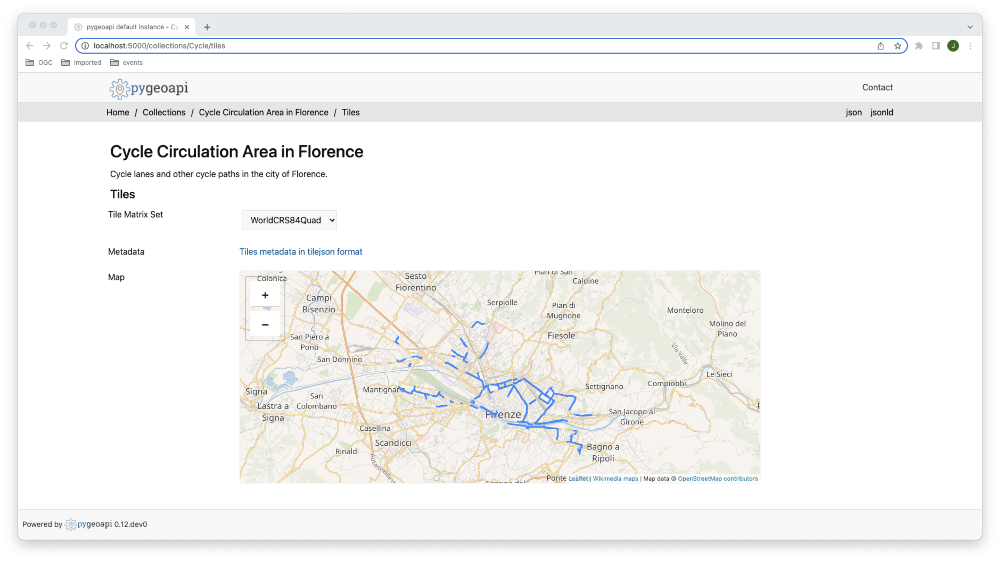

Tiles of geospatial information
On this section, you will learn how to publish and consume vector tiles using the OGC API - Tiles candidate standard.
You will publish a vector dataset with cycle paths, from the city of Florence. Here you can find more information about the dataset.
Change to docker directory:
cd workshop/docker
Generate vector tiles on disk, using tippecanoe:
docker run -it --rm \
-v ${PWD}/data:/data \
emotionalcities/tippecanoe \
tippecanoe --output-to-directory=/data/tiles/ --force --maximum-zoom=16 --drop-densest-as-needed --extend-zooms-if-still-dropping --no-tile-compression /data/cycle-lanes-firenze.geojson
Add the cycle collection to the resources section of docker.config.yml:
Cycle:
type: collection
title: Cycle Circulation Area in Florence
description: Cycle lanes and other cycle paths in the city of Florence.
keywords:
- cycle
links:
- type: text/html
rel: canonical
title: information
href: http://opendata.comune.firenze.it/?q=metarepo/datasetinfo&id=52d8d3ab-eae5-400e-8561-d974f8612de0
hreflang: en-US
extents:
spatial:
bbox: [-180,-90,180,90]
crs: http://www.opengis.net/def/crs/OGC/1.3/CRS84
temporal:
begin: 2011-11-11
end: null # or empty
providers:
- type: feature
name: GeoJSON
data: /data/cycle-lanes-firenze.geojson
#id_field: field_1
- type: tile
name: MVT
data: /data/tiles
#data: tests/data/tiles/DATASET
options:
metadata_format: tilejson # default | tilejson
bounds: [[11.1861935050234251,43.7512761718001855],[11.3125196304517655,43.8129406631082645]]
zoom:
min: 0
max: 16
schemes:
- WorldCRS84Quad
format:
name: pbf
mimetype: application/vnd.mapbox-vector-tile
Start pygeoapi with:
docker-compose up
You can access the Cycle collection at this endpoint:
http://localhost:5000/collections/Cycle
And the tile metadata at this endpoint:
http://localhost:5000/collections/Cycle/tiles/WorldCRS84Quad/metadata

Client Access
LeafletJS is a popular javascript library to add interactive maps to websites. LeafletJS does not support OGC API's explicitely, leafletJS can however interact with OGC API by using the results of the API directly.
Add OGC API Tiles to a website with LeafletJS
Copy the html below to a file called 'vector-tiles.html'. Open the file in a web browser. The code uses the LeafletJS library with the leaflet.vectorgrid plugin to display the lakes OGC API Tile service on top of an Open Street Map background.
<html>
<head><title>OGC API Tiles exercise</title></head>
<body>
<div id="map" style="width:100vw;height:100vh;"></div>
<link rel="stylesheet" href="https://unpkg.com/leaflet@1.0.3/dist/leaflet.css" />
<script type="text/javascript" src="https://unpkg.com/leaflet@1.3.1/dist/leaflet.js"></script>
<script type="text/javascript" src="https://unpkg.com/leaflet.vectorgrid@1.2.0"></script>
<script>
map = L.map('map').setView({ lat: 62, lng: 30 }, 5);
map.addLayer(new L.TileLayer(
'https://tile.openstreetmap.org/{z}/{x}/{y}.png',
{maxZoom: 11,attribution: '© OpenStreetMap'}));
map.addLayer(new L.vectorGrid.protobuf(
'https://demo.pygeoapi.io/master/collections/lakes/tiles/WebMercatorQuad/{z}/{x}/{y}?f=mvt',
{ rendererFactory: L.canvas.tile }));
</script>
</body>
</html>
Tip
Openlayers is another javascript library with support for OGC API Tiles. Check out their vector tile example.
Display OGC API Features with LeafletJS
Open vector-tiles.html and add the following code after the creation of the vector tile layer. The code fetches features from pygeoapi and adds them to the map.
(async () => {
const windmills = await fetch('https://demo.pygeoapi.io/master/collections/dutch_windmills/items?limit=100', {
headers: { 'Accept': 'application/geo+json' }
}).then(response => response.json());
L.geoJSON(windmills).addTo(map);
})();
Tip
Also ESRI supports the OGC API Features layer in their javascript client.